专题4.1 线段、射线、直线（举一反三讲义）
【北师大版2024】

【题型1 直线、射线、线段】 2
【题型2 两点确定一条直线】 5
【题型3 两点之间线段最短】 7
【题型4 线段中点的有关计算】 9
【题型5 两点间的距离】 11
【题型6 比较线段的长短】 13
【题型7 线段的和差】 16
【题型8 尺规作线段】 19
【题型9 线段n等分点的有关计算】 21
【题型10 探究线段之间的数量关系】 24
【题型11 与线段有关的动点问题】 26

知识点1 直线
1. 直线的基本事实：经过两点有一条直线，并且只有一条直线．简单说成，两点确定一条直线．
2. 直线可以用表示直线上任意两点的大写字母来表示，且字母不分顺序，也可以用一个小写字母来表示，但不能用两个小写字母或一个大写字母或一大写一小写两字母来表示．
3. 当两条不同的直线有一个公共点时，就称这两条直线相交，这个公共点叫作它们的交点．
4. 直线没有端点，没有长度，不可度量．“延长直线”的说法是错误的．
知识点2 射线
1. 与直线的表示类似，射线也可以用表示端点和射线上另一个点的两个大写字母来表示，也可以用一个小写字母来表示．
2. 射线只有一个端点，没有长度，不可度量．如下图，“延长射线AB”的说法是错误的，但可以说“反向延长射线AB”．
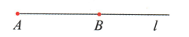
知识点3 线段
1. 线段的表示：线段可以用表示端点的两个大写字母表示，也可以用一个小写字母来表示．下图中的线段可以表示为线段AB、线段BA或线段a．
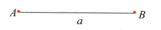
2. 线段的基本事实：两点的所有连线中，线段最短．简单说成：两点之间，线段最短．
3. 线段、射线、直线的区别与联系
线段 | 射线 | 直线 | ||
图形 | 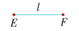 | 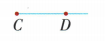 | 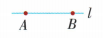 | |
表示 | 线段EF或线段FE 或线段l | 射线CD | 直线AB或直线BA或直线l | |
区别 | 端点 | 有两个端点 | 有一个端点 | 无端点 |
延伸 | 不可以延伸 | 一端可以无限延伸 | 可以无限延伸 | |
度量 | 可以度量 | 不可以度量 | 不可以度量 | |
联系 | 都属于“线”，都是直的；线段和射线是直线的一部分 | |||
基本事实 | 两点之间，线段最短 | 两点确定一条直线 | ||
4. 两点间的距离：连接两点的线段的长度，叫作这两点间的距离．
5. 线段的比较：比较两条线段的长短，可用刻度尺分别测量出它们的长度来比较，或者把其中的一条线段移到另一条线段上作比较．
6. 点和直线的位置关系：点在直线上或点在直线外，也可以说成直线经过点或直线不经过点．
7. 线段的计算：线段也可以进行和差倍分的计算，线段的计算是指线段的长度的计算．
8. 线段的中点：把一条线段分成两条相等的线段的点，叫作线段的中点．如图，若点O是线段AB的中点，则有AO＝BO＝12AB．反之成立，即若点O为线段AB上一点，且满足AO＝BO＝12AB，那么点O为线段AB的中点．
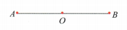
9. 线段的n等分点：若线段上（n－1）个点把这条线段分成了n条相等的线段，则称这（n－1）个点为这条线段的n等分点．
【题型1 直线、射线、线段】
【例1】（24-25七年级上·全国·随堂练习）下列语句正确的是（ ）
A．画直线AB=10厘米 B．画射线OB=3厘米
C．在射线OA上截取AB=2厘米 D．延长线段AB到点C，使得BC=AB
【答案】D
【分析】本题主要考查直线、射线、线段，熟练掌握直线、射线、线段的概念是解决本题的关键．
根据直线、射线、线段的概念逐项判定即可解决此题．
【详解】解：A、直线两端无限延伸，即直线无长度，所以画直线AB=10厘米错误，故此选项不符合题意．
B、射线一端有固定的顶点，另一端无限延伸，即射线无长度，所以画射线OB=3厘米错误，故此选项不符合题意．
C、射线OA是向一方无限延伸的，要截取长为2厘米的线段，应以射线端点O为线段的一个端点，即截取OB=2厘米，原说法错误，故此选项不符合题意；
D、延长线段AB到点C，当B为AC的中点时，可使得BC=AB，所以延长线段AB到点C，使得BC=AB正确，故此选项符合题意．
故选：D．
【变式1-1】（24-25七年级上·全国·课后作业）如图，点A，B，C在直线l上，则图中有 条线段， 条射线，有 条直线．

【答案】 3 6 1
【分析】本题考查了直线、射线和线段的认识，直线没有端点，是无限长的；射线有一个端点，可以向一端无限延伸，不能度量长度；线段有两个端点，可以度量长度．据此解答．
【详解】解：由图可知，直线上有A、B、C三个点，
根据直线的特征可知，图中有1条直线；
根据射线的特征可知，以A为端点时，有2条射线；以B为端点时，有2条射线；以C为端点时，有2条射线，
所以一共有2×3=6（条）射线；
根据线段的特征可知，图中有线段AB、线段AC、线段BC，3条线段．
即图中有1条直线，6条射线，3条线段．
故答案为：1；6；3．
【变式1-2】平面上有四点A、B、C、D，根据下列语句画图．

(1)画直线AD；
(2)连接AC、BD，相交于点O；
(3)画射线CB．
【答案】(1)见解析
(2)见解析
(3)见解析
【分析】本题考查了复杂作图、直线、射线、线段，解决本题的关键是掌握直线、射线、线段的定义．
（1）画直线AD即可；
（2）连接AC、BD，相交于点O即可；
（3）画射线CB即可．
【详解】（1）
（2）
（3）
【变式1-3】（24-25七年级上·湖北武汉·期末）某列车往返于武汉站与南昌西站，途经鄂州、黄石北与庐山站，列车迷贤哥想收集该列车所有不同的车票（起点或终点不一样都算不同的车票），则他需要购买（ ）张车票
A．6 B．10 C．15 D．20
【答案】D
【分析】本题考查线段的计数问题，解题的关键在于将该问题抽象为几何问题解决．将不同站点的车票抽象为线段，再结合线段的计数方法和“起点或终点不一样都算不同的车票”求解，即可解题．
【详解】解：将不同站点的车票抽象为线段，如下图所示：
上图共有线段4+3+2+1=10（条），
因为起点或终点不一样都算不同的车票，
所以所有不同的车票有2×10=20（张），
故选：D．
【题型2 两点确定一条直线】
【例2】（25-26七年级上·全国·课后作业）如图所示，网格纸上有八个点同时经过其中3个点的直线有（ ）
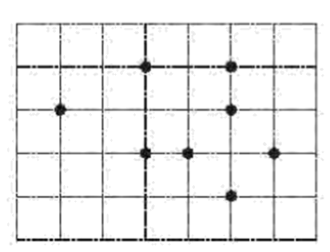
A．1条 B．2条 C．3条 D．4条
【答案】C
【分析】本题考察了直线的性质：两点确定一条直线，关键是按照一定的顺序寻找．
找到同时经过其中3个点的直线的条数即可求解．
【详解】解：如图所示：
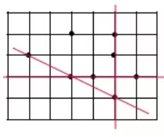
故同时经过其中3个点的直线有3条．
故选：C．
【变式2-1】（24-25七年级上·河南平顶山·期末）墨斗是中国传统木工行业画直线的常用工具．如图，木工师傅锯木料时，一般先在木板上画出两个点，从墨斗中拉出墨线一端固定在一个点，另一端固定在另一点，绷紧并提起墨线中段，过这两点就弹出一条墨线，木工师傅这样做的道理是： ．
【答案】两点确定一条直线
【分析】本题考查了直线的性质，熟练掌握直线的性质是解题的关键．根据直线的性质，即可解答．
【详解】解：墨斗是中国传统木工行业画直线的常用工具．如图，木工师傅锯木料时，一般先在木板上画出两个点，从墨斗中拉出墨线一端固定在一个点，另一端固定在另一点，绷紧并提起墨线中段，过这两点就弹出一条墨线．木工师傅这样做的道理是：两点确定一条直线，
故答案为：两点确定一条直线．
【变式2-2】（24-25七年级上·河南郑州·阶段练习）在下列现象中，体现了基本事实“两点确定一条直线”的有 个．
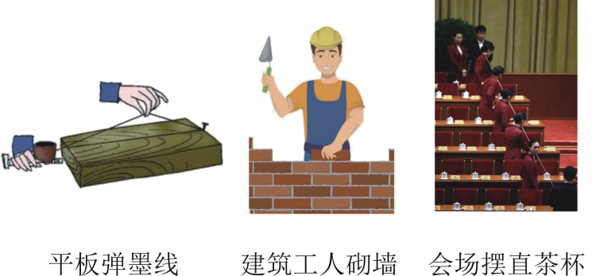
【答案】3
【分析】本题考查了直线的性质：两点确定一条直线．熟练掌握直线的性质是解题的关键．
根据直线的性质，逐一判断即可解答．
【详解】解：①平板弹墨线，体现了基本事实“两点确定一条直线”；
②建筑工人砌墙，体现了基本事实“两点确定一条直线”；
③会场摆直茶杯，体现了基本事实“两点确定一条直线”；
所以，体现了基本事实“两点确定一条直线” 的有3个，
故答案为：3．
【变式2-3】（25-26七年级上·全国·课后作业）平面上有五个点，其中只有三点在一条直线上，此外无其他三点共线，经过这些点可以作直线的条数是（ ）
A．6 B．8 C．10 D．12
【答案】B
【分析】根据两点确定一条直线，作出草图即可得解．
【详解】解：如图，共有8条直线．
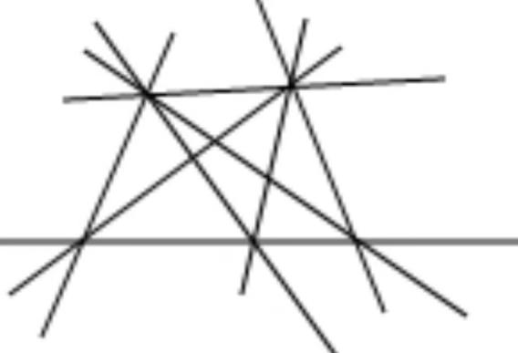
故选：B．
【点睛】本题主要考查了两点确定一条直线的性质，解决问题的关键是根据题意画出图形，利用数形结合的思想求解更加形象直观．
【题型3 两点之间线段最短】
【例3】（2025·吉林·模拟预测）如图所示，小明到小颖家有三条路，小明想尽快到小颖家，请你帮他选线路 ，用数学知识解释为 ．
【答案】 ② 两点之间线段最短
【分析】本题考查线段的性质，根据“两点之间线段最短”可得答案．
【详解】解：选择走第②条路，其中的道理是两点之间线段最短．
故答案为：②，两点之间线段最短．
【变式3-1】如图，A、B是河l两侧的两个村庄．现要在河l上修建一个抽水站P，使它到两个村庄A，B的距离和最小，小丽认为在图中连接AB与l的交点就是抽水站P的位置，你认为这里用到的数学基本事实是（ ）

A．经过一点能画无数条直线
B．两点之间，线段最短
C．两点确定一条直线
D．连接两点间的线段的长度，叫做这两点的距离
【答案】B
【分析】本题考查了线段的性质，利用线段的性质即可求解．
【详解】解：这里用到的数学基本事实是：两点之间线段最短．
故选：B．
【变式3-2】（24-25七年级上·北京昌平·期末）昌平区南邵镇张各庄村的银杏林是北京面积最大的银杏林，这里有超过80万株的银杏树．小林同学在游玩时收集了一些银杏落叶用来制作手工，如图，她用剪刀沿直线将一片平整的银杏叶剪掉一部分，发现剩下的银杏叶的周长比原银杏叶周长要小，理由是 ．

【答案】两点之间线段最短
【分析】本题考查线段的性质：两点之间，线段最短，由线段的性质：两点之间，线段最短，即可得到答案．
【详解】解：她用剪刀沿直线将一片平整的银杏叶剪掉一部分，发现剩下的银杏叶的周长比原银杏叶周长要小，理由是：两点之间，线段最短．
故答案为：两点之间，线段最短．
【变式3-3】（24-25七年级下·广东河源·期末）小华准备从A地去往B地，打开导航，测距显示两地相距280km，但导航提供的三条可选路线长却分别为367km，373km，369km，能解释这一现象的数学知识是（ ）
A．两点之间线段最短
B．垂线段最短
C．两点确定一条直线
D．在同一平面内，过一点有且仅有一条直线垂直于已知直线
【答案】A
【分析】本题考查了两点之间线段最短，根据两点之间线段最短即可求解，正确理解两点之间线段最短是解题的关键．
【详解】解：由测距显示两地相距280km，但导航提供的三条可选路线长却分别为367km，373km，369km，能解释这一现象的数学知识是两点之间线段最短，
故选：A．
【题型4 线段中点的有关计算】
【例4】（24-25六年级下·全国·单元测试）如果线段AB=4cm，C是AB的中点，延长CB到D，使CD=4cm，E是AD的中点，则AE的长度为（ ）
A．3cm B．3.5cm C．4cm D．4.5cm
【答案】A
【分析】本题考查了线段中点的有关计算，线段的和与差，两点间的距离，解题关键是掌握上述知识点并能运用求解．
根据线段中点的定义和线段的和差即可得到结论．
【详解】解：如图，
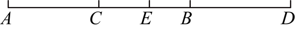
∵AB=4cm，C是AB的中点，
∴AC=BC=12AB=2cm，
∵CD=4cm，
∴AD=6cm，
∵E是AD的中点，
∴AE=12AD=3cm，
故选：A．
【变式4-1】线段AB=5，延长AB到C，使BC=2AB，若D为AB的中点，则DC的长是 ．
【答案】12.5
【分析】本题考查了线段的和差．
根据题意画出图形，再根据BC=2AB求出BC的长度，由DC=DB+BC即可得出结论．
【详解】解：如图，
∵BC=2AB,AB=5，
∴BC=10，
∵D为AB的中点，
∴DB=12AB=52，
∴DC=DB+BC=52+10=12.5，
故答案为：12.5．
【变式4-2】（25-26七年级上·全国·课后作业）如图，已知P为线段AN的中点，Q是线段AM的中点，则MNPQ的值为 ．
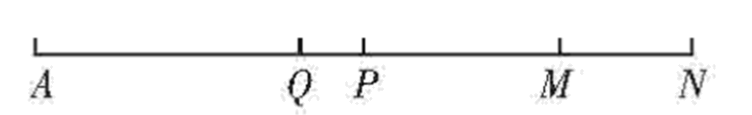
【答案】2
【分析】本题主要考查了两点间的距离，依据线段中点的定义以及线段的和差关系得到PQ=12MN是解题的关键．
根据线段中点的定义可知：AP=12AM+MN、AQ=12AM，故QP=AP−AQ=12MN，然后代入求解即可．
【详解】解：∵P为线段AN的中点，Q是线段AM的中点，
∴AP=12AM+MN、AQ=12AM，故QP=AP−AQ=12MN，
∴MNPQ=MN12MN=2．
故答案为：2．
【变式4-3】（24-25七年级上·重庆·阶段练习）线段AB=12，点C为线段AB上的三等分点，当点D为线段CB的中点，则线段DB的长为（ ）
A．4 B．6 C．2或6 D．2或4
【答案】D
【分析】此题主要考查线段之间的关系，中点的定义，解题的关键是熟知线段的和差关系；
根据点C是线段AB上的三等分点，分两种情况画图进行计算即可．
【详解】解：如图，
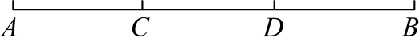
∵点C是线段AB上的三等分点， AB=12，
∴BC=23AB=23×12=8，
∵D是线段BC的中点，，
∴DB=12BC=4；
如图，
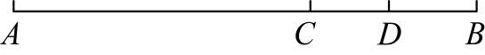
∵点C是线段AB上的三等分点， AB=12，
∴BC=13AB=13×12=4，
∵D是线段BC的中点，，
∴DB=12BC=2；
则DB的长为2或4．
故选：D．
【题型5 两点间的距离】
【例5】（24-25七年级上·甘肃白银·阶段练习）如果线段AB=3cm，BC=4cm，则A、C两点间的距离是（ ）
A．7cm B．1cm C．7cm或1cm D．无法确定
【答案】D
【分析】本题主要考查两点间的距离，分别当A，B，C三点在一条直线上时，当A，B，C三点不在一条直线上时，两种情况进行分析即可．
【详解】解：当A，B，C三点在一条直线上时，分点C在线段AB的延长线上和在线段BA的延长线上两种情况讨论；
①点C在线段AB的延长线上时，AC=AB+BC=3+4=7cm；
②点C在线段BA的延长线上时，AC=BC−AB=4−3=1cm；
∴A、C两点之间的距离是7cm或1cm ；
当A，B，C三点不在一条直线上时，A，C两点之间的距离有多种可能，不能确定．
故选：D．
【变式5-1】（24-25七年级上·江苏南京·阶段练习）如图，B、D在线段AC上， BD=13AB=14CD，线段AB、CD的中点E、F之间距离是10cm，则AB= cm．
【答案】12
【分析】本题主要考查了两点间的距离和中点的定义，注意运用数形结合思想和方程思想．先设BD=xcm，由题意得AB=3xcm，CD=4xcm，AC=6xcm，再根据中点的定义，用含x的式子表示出AE和CF，再根据EF=AC−AE−CF=2.5x，且E、F之间距离是10cm，所以2.5x=10，解方程求得x的值，即可求AB，CD的长．
【详解】解：设BD=xcm，则AB=3xcm，CD=4xcm，AC=6xcm，
点E、点F分别为AB、CD的中点，∴AE=12AB=1.5xcm，CF=12CD=2xcm，
∴EF=AC−AE−CF=2.5xcm，
∵EF=10cm，
∴2.5x=10，
解得：x=4，
∴AB=12cm．
故答案为：12．
【变式5-2】已知直线l上有A、B、C三点，AB=10，BC=4，则AC= ．
【答案】14或6
【分析】本题考查，线段的和差运算，以及分类讨论思想，在解题中能够将分类讨论思想与几何图形相结合是本题的关键．根据题目可分两种情况，C点在B点右侧时，C在B左侧时，根据两种情况画图,结合图形即可求解．
【详解】解：如图所示，当C点在B点右侧时：AC＝AB＋BC=10＋4＝14；
如图所示：当C在B左侧时：AC=AB－BC=10−4=6，
综上所述AC等于14或6，
故答案为：14或6．
【变式5-3】（24-25七年级上·浙江宁波·期末）如图，直线上有五个点A，B，C，D，E，连接其中两点形成的10个距离，从小到大排列依次为：2，4，5，7，8，k，13，15，17，19，那么k的值是 ．

【答案】12
【分析】本题考查了两点之间的距离．由题意得AE=19，AB=2，求得BE=AE−AB=17，AD=15，DE=AE−AD=4，BD=13，再分两种情况讨论，即可求解．
【详解】解：由题意得AE=19，AB=2，
∴BE=AE−AB=17，
∴AD=15，
∴DE=AE−AD=4，
∴BD=BE−DE=17−4=13，
∵13=5+8，
当BC=5，CD=8时，AC=AB+BC=7，CE=CD+DE=12，
符合题意，此时k=12；
当BC=8，CD=5时，AC=AB+BC=10，CE=CD+DE=9，
不符合题意，
综上，k的值是12；
故答案为：12．
【题型6 比较线段的长短】
【例6】（25-26七年级上·全国·课后作业）如图，一个三角形纸片，不用任何工具，你能准确比较线段AB与线段AC的大小吗？试用你的方法分别确定线段AB，AC的中点．
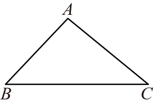
【答案】AC>AB，见解析
【分析】本题考查了比较线段长短的知识，将纸片对折，使B点落在AC上，就可以得出AC>AB；分别对折使A，B，C三点两两重合，线段AB，AC上折痕点就是线段中点．
【详解】解：将纸片对折，使AB边落在AC上，就可以得出AC>AB；
对折使A、B重合，线段AB上折痕点就是线段中点．
对折使A、C重合，线段AC上折痕点就是线段中点．
【变式6-1】（24-25七年级上·陕西咸阳·阶段练习）如图，用圆规比较两条线段AB和A′B′的长短，图中的两个圆规大小相同且夹角相等，其中正确的是（ ）
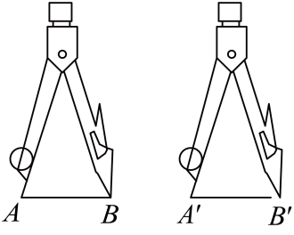
A．A′B′>AB B．A′B′=AB
C．A′B′<AB D．没有刻度尺，无法确定
【答案】C
【分析】本题考查线段的长短比较，利用圆规作线段可得结论.
【详解】由图可得，A′B′<AB，
故答案为：C.
【变式6-2】为了比较线段AB和线段CD的长短，把线段CD移到线段AB上，使点C与点A重合．（填“>”“=”或“<”）
（1）当点D落在线段AB上时，AB CD；
（2）当点D与点B重合时，AB CD；
（3）当点D落在线段AB的延长线上时，AB CD．
【答案】 > = <
【分析】（1）正确画出图形，根据图形求解即可；
（2）正确画出图形，根据图形求解即可；
（3）正确画出图形，根据图形求解即可．
【详解】解：（1）如图，
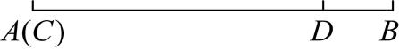
当点D落在线段AB上时，AB>CD；
（2）如图，
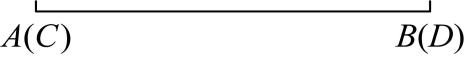
当点D与点B重合时，AB=CD；
（3）如图，
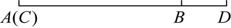
当点D落在线段AB的延长线上时，AB<CD．
故答案为：>，=，<
【点睛】本题主要考查了线段比较长短，正确理解题意并画出图形是解题的关键．
【变式6-3】如图：A、B、C、D四点在同一直线上．若AC=BD．
（1）比较线段的大小：AB CD（填“＞”、“＝”或“＜”）；
（2）若BC=34AC，且AC=8cm，求AD的长．

【答案】（1）=；（2）10cm
【分析】（1）利用等式的性质解答；
（2）根据BC=34AC，且AC=8cm，求出BC及CD的长度，由此得到AD的长．
【详解】解：（1）∵AC=BD，
∴AC-BC=BD-BC，
∴AB=CD，
故答案为：＝；
（2）∵BC=34AC，AC=8，
∴BC=6，
∴AB=AC−BC =8−6 =2，
∵AB=CD，
∴CD=2，
∴AD=AB+BC+CD=2+6+2=10（cm）．
【点睛】此题考查了线段的加减计算，正确理解图形中各线段的位置关系是解题的关键．
【题型7 线段的和差】
【例7】如图，点M、N在线段AB上，AMMB=13，ANNB=23，若MN=2，则AB的长为（ ）
A．103 B．403 C．475 D．235
【答案】B
【分析】此题考查了线段的和差倍分，解答本题的关键是熟练掌握线段之间的和差倍分关系．
先得出AM=14AB，AN=25AB，得MN=AN−AM=320AB，进而用MN=2建立方程求解即可得出结论．
【详解】解：∵AMMB=13，ANNB=23，
∴AM=14AB，AN=25AB．
∴MN=AN−AM=320AB．
∵MN=2，
∴320AB=2．
∴AB=403．
故选：B．
【变式7-1】已知线段AB，延长AB到C，使BC=2AB，在AB的反向延长线上截取AD=AC，则DB:AB= ．
【答案】4:1
【分析】本题考查线段的和差的应用，求出AD=3AB，BD=4AB，再求出比值即可．利用数形结合的思想解决问题是解题的关键．
【详解】解：如图，
∵AD=AC，BC=2AB，
∴AD=AC=AB+BC=AB+2AB=3AB，
∴BD=AD+AB=3AB+AB=4AB，
∴DB:AB=4:1．
故答案为：4:1．
【变式7-2】如图，AB=17cm，点C是线段AB延长线上一点，在线段BC上取一点N，使BN=3CN，点M为线段AC的中点，则MN−13BN= cm．
【答案】8.5
【分析】本题考查了线段的和差，与线段中点有关的计算，由题意可得BN=34BC，CN=14BC，AC=AB+BC，再求出CM=12AB+BC，从而可得MN=12AB+14BC，代入所求式子计算即可得解，熟练掌握以上知识点并灵活运用是解此题的关键．
【详解】解：∵点C是线段AB延长线上一点，在线段BC上取一点N，使BN=3CN，
∴BN=34BC，CN=14BC，AC=AB+BC，
∵点M为线段AC的中点，
∴CM=12AC=12AB+BC，
∴MN=CM−CN=12AB+BC−14BC=12AB+14BC，
∴MN−13BN=12AB+14BC−13×34BC=12AB+14BC−14BC=12AB，
∵AB=17cm，
∴MN−13BN=8.5cm，
故答案为：8.5．
【变式7-3】（24-25七年级上·山东济南·期末）如图，AB为一根长为25 cm的绳子，拉直铺平后，在绳子上任意取两点M、N，分别将AM、BN沿点M、N折叠，点A、B分别落在绳子上的点A′、B′处．当A′B′=5 cm时，MN的长为（ ）

A．10 cm B．25 cm
C．10 cm或15 cm D．15 cm或25 cm
【答案】C
【分析】本题考查了折叠的性质，两点之间的距离．
分两种情况分别计算即可：当点落在点的左侧时，当点落在点的右侧时．
【详解】解：当点A′落在点B′的左侧时，如图，

∵AM+A′M+A′B′+B′N+BN=25cm，A′B′=5cm，
∴AA′+BB′=20cm，
由折叠的性质得，AM=A′M，BN=B′N，
∴A′M+B′N=10cm，
∴MN=MA′+A′B′+B′N=15cm；
当点A′落在点B′的右侧时，如图，

∵AA′+BB′=AB+A′B′=25+5=30cm，
∴AM+BN=12AA′+12BB′=12AA′+BB′=12×30=15cm，
∴MN=AB−AM+BN=25−15=10cm，
综上所述，当A′B′=5 cm时，MN的长为15cm或10cm．
知识点4 用尺规作图
1. 作一条线段等于已知线段
作法：第一步，作射线AC．第二步，以点A圆心，线段a的长为半径画弧，交射线AC于点B．则线段AB就是所求作的线段．

2. 作线段的和、差
在直线上作线段AB＝a，再在线段AB的延长线上作线段BC＝b，线段AC就是a与b的和，记作AC＝a+b；
设线段a>b，如果在线段AB上作线段BD＝b，那么线段AD就是α与b的差，记作AD＝a－b．

【题型8 尺规作线段】
【例8】（25-26七年级上·全国·课后作业）线段a，b，c如图所示，用尺规作一条线段AD，使AD=a+b−c（保留作图痕迹，不写作法）．

【答案】
【分析】本题考查了线段和差的尺规作图，在射线上截取点C，使AC=a+b，再在线段上截取点D，使CD=c，根据线段的和差计算，可知AD线段即为所求，正确理解线段和差的尺规作图步骤是解题的关键．
【详解】解：如图：在射线上截取点C，使AC=a+b，再在线段上截取点D，使CD=c，
根据线段的和差计算，AD=AC−CD=a+b−c，可知AD线段即为所求．
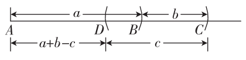
【变式8-1】作图：已知线段a、b，请用尺规作线段EF使EF＝a+b．请将下列作图步骤按正确的顺序排列出来（只填序号） ．
作法：①以M为端点在射线MG上用圆规截取MF＝b；②作射线EG；③以E为端点在射线EG上用圆规截取EM＝a；④EF即为所求的线段．
【答案】②③①④
【分析】根据用尺规作一条线段等于已知线段的方法，对所给的作法步骤逐一进行分析，然后排序即可得.
【详解】作法步骤为：作射线EG；
以E为端点在射线EG上用圆规截取EM＝a；
以M为端点在射线MG上用圆规截取MF＝b；
EF即为所求的线段；
故答案为②③①④．
【点睛】本题考查了作图﹣复杂作图：复杂作图是在五种基本作图的基础上进行作图，一般是结合了几何图形的性质和基本作图方法．解决此类题目的关键是熟悉基本几何图形的性质，结合几何图形的基本性质把复杂作图拆解成基本作图，逐步操作．
【变式8-2】（24-25七年级上·甘肃兰州·期末）如图，在操作课上，同学们按老师的要求操作：①作射线AM；②在射线AM上顺次截取AC=CD=a；③在射线DM上截取DE=b；④在线段EA上截取EB=c，发现点B在线段CD上．由操作可知，线段AB= ．

【答案】2a+b−c
【分析】本题考查了线段的和差及基本作图知识，准确把握线段的和差关系是解题的关键．根据AB=AD+DE−EB即可求得．
【详解】解：∵AC=CD=a，
∴AD=2a，
∵DE=b，
∴AE=2a+b，
∵BE=c，
∴AB=2a+b−c，
故答案为：2a+b−c．
【变式8-3】如图，点C、D分别是线段AB上两点（CD>AC，CD>BD），用圆规在线段CD上截取CE=AC，DF=BD，若点E与点F恰好重合，AB=9，则CD长为（ ）

A．4 B．4.5 C．5 D．5.5
【答案】B
【分析】本题考查了线段中点有关的计算，解题的关键在于能够根据题意得到CE=12AE，ED=12BE．
根据题意可得CE=12AE，ED=12BE，再由CD=CE+DE=12AE+12BE=12AB即可得到答案．
【详解】解：∵CE=AC，DF=BD，点E与点F恰好重合，
∴CE=AC，DF=BD，
∴CE=12AE，ED=12BE，
∴CD=CE+DE=12AE+12BE=12AB=12×9=4.5．
故选：B．
【题型9 线段n等分点的有关计算】
【例9】（24-25七年级上·湖北武汉·期末）已知线段AB长为12，点D是线段AB的三等分点，点C是线段AB上一点，且满足AC+CD=BC，则AC= ．
【答案】4或163
【分析】本题考查线段的和与差，分BD=13AB=4和当AD=13AB=4两种情况进行讨论求解即可．
【详解】解：当BD=13AB=4时，如图：
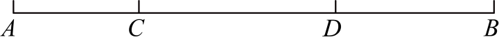
∵AC+CD=BC=BD+CD，
∴AC=BD=4；
当AD=13AB=4时，如图：
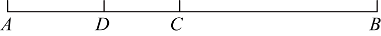
则：AC+CD=AC+AC−AD=BC，
∵AC+BC=AB=12，
∴3AC−AD=12，
∴AC=163；
综上：AC=4或AC=163；
故答案为：4或163．
【变式9-1】如图所示，长为12cm的线段AB的中点为M，C将线段MB分为MC和CB，且MC:MB=1:3，则线段AC的长为（ ）

A．10 B．9 C．8 D．7
【答案】C
【分析】根据中点的定义，可求出AM和BM的长度，根据MC和MB的比例关系，可求出MC的长度，最后用AM加上CM即可求出AC的长．
【详解】∵点M为AB中点，
∴AM=BM=12AB=6cm，
∵MC:MB=1:3，
∴MC=13MB=2cm，
∴AC=AM+MC=8cm；
故选：C
【点睛】本题主要考查了中点的定义和成比例线段，熟练地根据中点的定义和线段间的比例关系求出需要线段的长度是解题的关键．
【变式9-2】把根绳子对折成一条线段AB，在线段AB取一点P，使AP=13PB，从P处把绳子剪断，若剪断后的三段绳子中最长的一段为24cm，则绳子的原长为（ ）
A．32cm B．64cm C．32cm或64cm D．64cm或128cm
【答案】C
【分析】由于题目中的对折没有明确对折点，所以要分A为对折点与B为对折点两种情况讨论，讨论中抓住最长线段即可解决问题．
【详解】解：如图
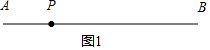
∵AP=13PB，
∴2AP=23PB＜PB
①若绳子是关于A点对折，
∵2AP＜PB
∴剪断后的三段绳子中最长的一段为PB=30cm，
∴绳子全长=2PB+2AP=24×2+23×24=64cm；
②若绳子是关于B点对折，
∵AP＜2PB
∴剪断后的三段绳子中最长的一段为2PB=24cm
∴PB=12 cm
∴AP=12×13=4cm
∴绳子全长=2PB+2AP=12×2+4×2=32 cm；
故选：C．
【点睛】本题考查的是线段的对折与长度比较，解题中渗透了分类讨论的思想，体现思维的严密性，在今后解决类似的问题时，要防止漏解．
【变式9-3】在直线l上有A、B、C、D四点，其中点B是线段AD的三等分点，点C是线段AD的中点，点E是线段AD延长线上一点，且AE+BE=2AD，则BECE的值为 ．
【答案】54或45
【分析】本题考查了线段的和差关系，中点的性质，线段n等分点的计算，设AD=x，根据题意可得AC=CD=12x，再根据点B的位置分情况讨论即可．
【详解】解：设AD=x，
∵点C是线段AD的中点，
∴AC=CD=12x，
如图，当点B是靠近A的线段AD的三等分点时，
则AB=13x，BD=23x，
∵ AE+BE=2AD，
∴x+DE+23x+DE=2x，
∴DE=16x，
∴BECE=23x+16x12x+16x=54；
如图，当点B是靠近D的线段AD的三等分点时，
则BD=13x，AB=23x，
∵ AE+BE=2AD，
∴x+DE+13x+DE=2x，
∴DE=13x，
∴BECE=13x+13x12x+13x=45，
故答案为：54或45．
【题型10 探究线段之间的数量关系】
【例10】（24-25七年级下·湖南郴州·开学考试）如图，线段AC上依次有D，B，E三点，AD=12DB，E是BC的中点，BE=13DE=2．
(1)求证：AD=BE；
(2)求线段AC的长．
【答案】(1)见解析
(2)10
【分析】本题主要考查了线段和差倍分，线段中点的性质，解题的关键是掌握线段和差倍分的计算．
（1）利用线段的倍分关系即可证明；
（2）利用线段中点性质得出BC=4，利用线段的倍分关系求出DB长度，然后利用线段的和差即可求解．
【详解】（1）证明：∵BE=13DE，
∴BE=12DB，
∵AD=12DB，
∴AD=BE；
（2）解：∵E是BC的中点，
∴BC=2BE=4,
由（1）得AD=BE=2，
∴DB=2AD=4，
∴AC=AD+DB+BC=2+4+4=10，
∴线段AC的长为10．
【变式10-1】（24-25七年级上·安徽六安·期末）如图，C为线段AB上一点，AB=m，BC=n，M、N分别为AC、BC的中点．
(1)若m=10，n=4，求MN的长；
(2)若m=5n，求CNCM的值．
【答案】(1)5
(2)14
【分析】本题考查了线段和、差的运算及线段中点的概念，解答本题的关键是熟练掌握线段中点的概念及性质．
（1）根据M，N分别为AC，BC的中点可得MC=12AC，CN=12BC，再由MN=MC+CN即可求解；
（2）先由 AB=5n、BC=n 求出 AC，再依据中点性质表示出CN和 CM，最后计算两者比值．
【详解】（1）解：∵M是AC的中点，
∴MC=12AC，
∵N是CB的中点，
∴CN=12BC，
∴MN=MC+CN=12AC+BC=12AB=12×10=5．
（2）解：∵AB=m，BC=n，m=5n
∴AC=AB−BC=5n−n=4n，
∵M、N分别为AC、BC的中点．
∴MC=12AC=2n，NC=12BC=12n
∴CNCM=12n2n=14．
【变式10-2】（24-25七年级上·重庆巴南·期末）如图，直线上有A、B、M、N、Q五点，点M是线段AB的三等分点，点N是线段AB的中点，点Q是线段AB延长线上一点，且AQ=2AB−MQ，则NQBQ的值为 ．

【答案】4
【分析】本题考查两点间的距离，掌握线段的和、差、倍、比的关系以及线段中点的定义是正确解答的关键．根据线段的和、差、倍、比的关系以及线段中点的定义用含有参数a的代数式表示NQ,BQ算即可．
【详解】解：设AB=6a，
∵点M是线段AB的三等分点，点N是线段AB的中点，
∴AM=13AB=2a， BM=23AB=4a，AN=BN=12AB=3a，
∵AQ=2AB−MQ，即AB+BQ=2AB−MB−BQ，
∴6a+BQ=12a−4a−BQ，
∴BQ=a，
∴NQ=NB+BQ=3a+a=4a，
∴NQBQ=4aa=4，
故答案为：4．
【变式10-3】（2025八年级上·全国·专题练习）已知线段AB，C，M都是直线AB上的点，若AB>BC，M是BC的中点．求证：AC+AB=2AM．
【答案】证明见解析
【分析】本题主要考查了线段的和差计算，解题的关键是运用分类讨论的思想．
分两种情况讨论，点C在点B左侧或点C在点B右侧，根据线段中点的定义以及线段的和差计算求解即可．
【详解】证明：若点C在点B左侧，如答图①所示．
∵M是BC的中点（已知），
∴BC=2CM（线段中点的定义），
∴AC+AB=AC+AC+BC=2AC+BC=2AC+2CM=2AC+CM=2AM（等式的性质）；
若点C在点B右侧，如答图②所示．
∵M是BC的中点（已知），
∴BC=2BM（线段中点的定义），
∴AC+AB=AB+BC+AB=2AB+BC=2AB+2BM=2AB+BM=2AM（等式的性质）．
综上，AC+AB=2AM．
【题型11 与线段有关的动点问题】
【例11】如图，点C在线段AB上，图中有三条线段AB、AC和BC，若其中一条线段的长度是另一条线段长的2倍，则称点C是线段AB的“巧点”，若已知线段AB=20，点C是线段AB的“巧点”，则AC= ．
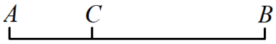
【答案】203或403或10
【分析】当点C是线段AB的“巧点”时，可能有BC=2AC、AC=2BC和AB=2AC=2BC三种情况，分类讨论计算即可．
【详解】当点C是线段AB的“巧点”时，可能有BC=2AC、AC=2BC、
AB=2AC=2BC三种情况，
①BC=2AC时，AC=13AB=13×20=203，
②AC=2BC时，AC=23AB=23×20=403，
③AB=2AC=2BC时，AC=12AB=12×20=10．
故答案为：203，403或10．
【点睛】本题考查了线段上两点间的距离，分类讨论并根据题意正确列式是解题的关键．
【变式11-1】（24-25七年级上·全国·期末）如图，线段AB=20cm，O是线段AB上的中点，P、Q是线段AB上的动点，点P沿A→B→A以4cm/s的速度运动，点Q沿B→A以2cm/s的速度运动．若P、Q点同时运动，当OP=OQ时，运动时间为（ ）．
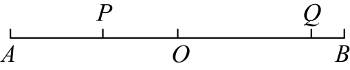
A．0s、10s或53s B．0s、5s或103s
C．0s、103s、203s或10s D．0s、5s、53s或103s
【答案】C
【分析】本题考查了动点问题、一元一次方程的应用，学会根据两点间的距离列出方程是解题的关键．设运动时间为ts，分别表示出OP和OQ的长，再结合OP=OQ列出方程，求出t的值即可解答．
【详解】解：∵线段AB=20cm，O是线段AB上的中点，
∴AO=12AB=10cm，
设运动时间为ts，则BQ=2tcm，
∴AQ=AB−AQ=20−2tcm，
∴OQ=AQ−AO=20−2t−10=10−2tcm，
∵点P沿A→B→A以4cm/s的速度运动，
∴分两种情况讨论：
①当点P沿A→B运动时，点P到达点B需要时间20÷4=5s，
当0≤t≤5时，AP=4tcm，
∴OP=AO−AP=10−4tcm，
∵OP=OQ，
∴10−4t=10−2t，
∴10−4t=10−2t或10−4t=2t−10，
解得：t=0或t=103，
②当点P沿B→A运动时，此时5≤t≤10，BP=4t−20，
∴AP=AB−BP=20−4t−20=40−4tcm，
∴OP=AP−AO=40−4t−10=30−4tcm，
∵OP=OQ，
∴30−4t=10−2t，
∴30−4t=10−2t或30−4t=2t−10，
解得：t=10或t=203，
∴综上所述，当OP=OQ时，运动时间为0s、103s、203s或10s．
故选：C．
【变式11-2】如图1，已知线段AB=20cm，点M是线段AB上一点，点C在线段AM上，点D在线段BM上，C、D两点分别从M、B出发以acm/s、bcm/s的速度沿直线BA运动，运动方向如箭头所示，其中a、b满足条件：|a−1|+|b−3|=0．

(1)直接写出：a=____________，b=_____________；
(2)若2cm<AM<4cm，当点C、D运动了3s，求AC+MD的值；
(3)如图2，若AM=13AB，点N是直线AB上一点，且AN−BN=MN，求MN与AB的数量关系．
【答案】(1)1，3
(2)8cm
(3)MN=13AB或MN=AB
【分析】（1）根据绝对值的非负性得出a-1=0，b-3=0，求解即可；
（2）当C、D运动3s时，MC=3cm，BD=9cm，结合图形求解即可；
（3）分两种情况：当点N在线段AB上时；当点N在线段AB的延长线上时；利用线段间的数量关系求解即可．
【详解】（1）解：∵|a−1|+|b−3|=0
∴a-1=0，b-3=0，
∴a=1，b=3，
故答案为：1；3；
（2）当C、D运动3s时，MC=3cm，BD=9cm，
∴AC+MD=AB−MC−BD =20−3−9=8(cm)．
（3）当点N在线段AB上时，
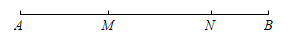
∵AN−BN=MN，
又∵AN−AM=MN，
∴BN=AM=13AB，
∴MN=AB−AM−BN=13AB．
当点N在线段AB的延长线上时，
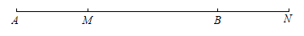
∵AN−BN=MN，
又∵AN−BN=AB，
∴MN=AB．
综上所述，MN=13AB或MN=AB．
【点睛】题目主要考查绝对值的非负性及点的运动，线段间的数量关系等，理解题意，根据图象得出线段间的数量关系是解题关键．
【变式11-3】已知有理数a，b，c在数轴上对应的点从左到右顺次为A，B，C，其中b是最小的正整数，a在最大的负整数左侧1个单位长度，BC=2AB．
（1）填空：a= ，b= ，c=
（2）点D从点A开始，点E从点B开始， 点F从点C开始，分别以每秒1个单位长度、1个单位长度、4个单位长度的速度在数轴上同时向左运动，点F追上点D时停止动，设运动时间为t秒．试问：
①当三点开始运动以后，t为何值时，这三个点中恰好有一点为另外两点的中点？
②F在追上E点前，是否存在常数k，使得DF+k⋅EF的值与它们的运动时间无关，为定值．若存在，请求出k和这个定值；若不存在，请说明理由．
【答案】（1）-2，1，7；（2）①t=1或t=52；②k=-1
【分析】（1）根据有理数的性质，A、B、C三点位置，数轴上两点的距公式及点的平移规律回答即可；
（2）①分E是DF的中点和点F是DE的中点两种情况计论；
②先用含ｔ的代数式表示DF+k⋅EF，DF+k⋅EF=9+6k−3+3kt，由3+3k=0求出k问题即可求解
【详解】解：（1）∵最小正数为1．最大的负整数为小-1，a在最大的负整数左侧1个单位长度
∴点A表示的数a为-1-1=-2，点B表示的数b为1，
∴AB=1-（-2）=3
∵BC=2AB=2×3=6，
∴点C表示的数为c=1+6=7，
故答案为：-2，1，7；
（2）①依题意，点F的运动距离为4t，点D、E运动的距离为t,
∴点D、E、F分别表示的数为-2-t，1-t， 7-4t,
当点F追上点D时，必将超过点B，
∴存在两种情况，即DE=EF和DF=EF，
如图，当DE=EF，即E为DF的中点时，
21−t=−2−t+7−4t，
解得，t=1，
如图，当EF=DF，即F为DE中点时，
27−4t=−2−t+1−t，
解得t=52，
综上所述，当ｔ=１秒和ｔ＝52时，满足题意．
②存在，理由：
点D、E、F分别表示的数为-2-t，1-t，7-4t,
如图，F在追上E点前， DF=7−4t-−2−t=9−3t，EF=7−4t-1−t=6−3t，
DF+k⋅EF=9−3t+k6−3t=9+6k−3+3kt，
当DF+k⋅EF与t无关时，需满足3+3k=0，
即k=-1时，满足条件．
【点睛】本题考查了数有理数的性质，数轴上点与数的对应关系及两点的距离，点的平移及线段的中点及分类讨论思想，正确理解点的运动与点的平移的关系是解本题的关键．